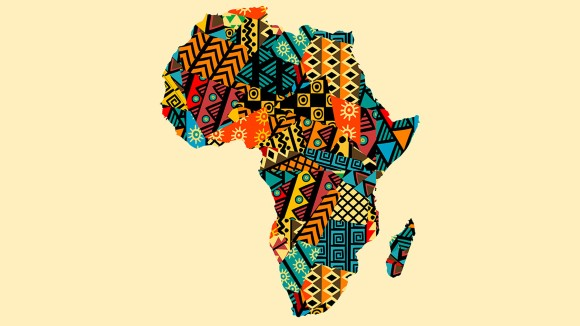

L'Afrique?

Introduction
L’Afrique est le deuxième plus grand continent du monde en termes de superficie et de population. Elle s’étend sur plus de 30 millions de kilomètres carrés et comprend plus de 50 pays indépendants. Le continent se distingue par sa diversité naturelle et culturelle, combinant déserts immenses, forêts tropicales, montagnes et plaines côtières, ainsi que des centaines de langues et dialectes, ce qui en fait l’un des continents les plus riches culturellement et historiquement.
Géographie et climat
La géographie de l’Afrique est extrêmement variée. Au nord se trouve le Sahara, le plus grand désert chaud du monde, tandis que les forêts tropicales couvrent de vastes régions au centre et à l’ouest, comme le Congo et le Cameroun. À l’est, les hauts plateaux éthiopiens et les lacs de l’Afrique de l’Est constituent la source du Nil, le plus long fleuve du monde. Le climat varie du tropical humide au sud et au centre au désertique sec au nord, offrant une biodiversité exceptionnelle.
Population et culture
L’Afrique compte plus de 1,4 milliard d’habitants répartis en centaines de groupes ethniques et linguistiques. Les langues les plus parlées sont l’arabe, le swahili, le français et l’anglais, ainsi que de nombreuses langues locales comme l’amharique, le zoulou et le haoussa. Le continent possède un riche patrimoine culturel visible dans la musique, la danse, les vêtements et la gastronomie, et organise de nombreux festivals qui reflètent la diversité et l’histoire des communautés locales.
Économie et ressources
L’Afrique possède d’immenses ressources naturelles, notamment de l’or, du diamant, du pétrole, du gaz naturel et du cuivre, ainsi que des terres agricoles fertiles. Cependant, de nombreux pays font face à des défis économiques liés au faible niveau d’industrialisation et à la dépendance à l’exportation de matières premières. Certaines nations comme l’Afrique du Sud, le Nigeria, le Kenya et le Maroc connaissent néanmoins une croissance rapide, devenant des centres commerciaux et industriels importants.
Tourisme et nature
L’Afrique est une destination touristique exceptionnelle grâce à ses paysages divers et sa faune unique. Les visiteurs peuvent découvrir les pyramides d’Égypte, les chutes Victoria entre la Zambie et le Zimbabwe, les montagnes de l’Atlas au Maroc, et faire des safaris au Kenya et en Tanzanie pour observer la faune sauvage dans son habitat naturel. Le continent abrite également des sites historiques anciens, tels que le royaume d’Aksoum en Éthiopie et les royaumes d’Afrique de l’Ouest comme l’Empire du Mali et l’ancienne Gana.
Éducation et développement
De nombreux efforts sont entrepris pour améliorer l’éducation, les infrastructures et la technologie. Plusieurs pays investissent dans la transformation numérique, l’enseignement supérieur et la recherche scientifique afin de développer leurs sociétés et économies. Les universités africaines jouent également un rôle important dans la formation des jeunes capables de relever les défis futurs et d’assurer un développement durable.
Conclusion
L’Afrique reste un continent d’espoir et d’avenir, alliant histoire ancienne, richesses naturelles, paysages magnifiques et peuples ambitieux œuvrant pour un futur meilleur. Comprendre sa diversité culturelle et géographique est essentiel pour apprécier son rôle dans le monde moderne. Ce n’est pas seulement un continent en développement, mais une source d’inspiration civilisationnelle et humaine qui reflète la puissance de la diversité et la beauté de la différence.